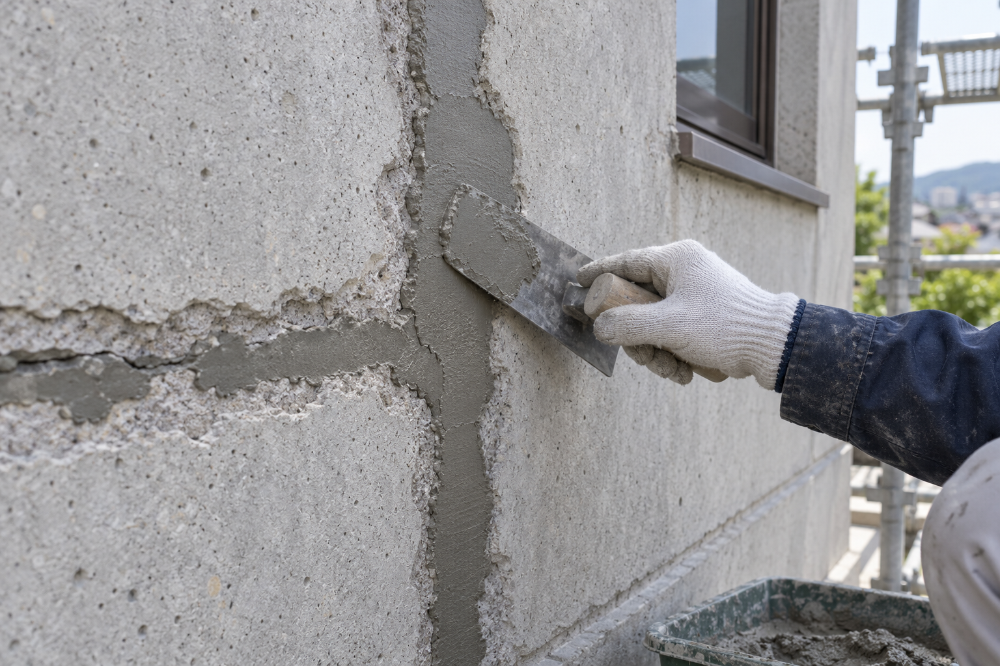
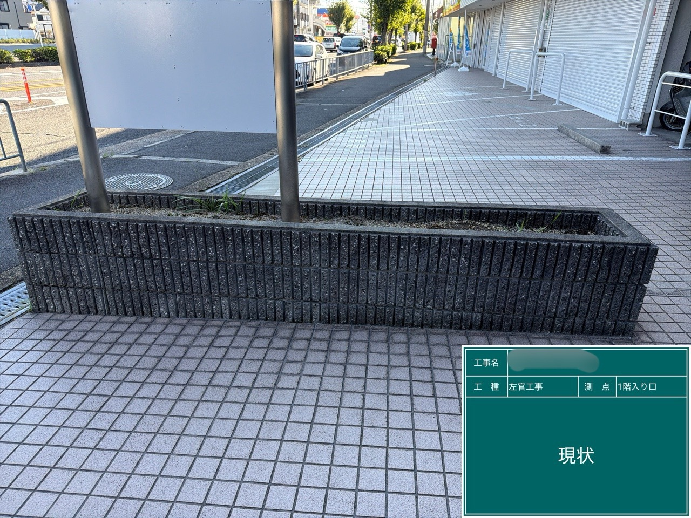
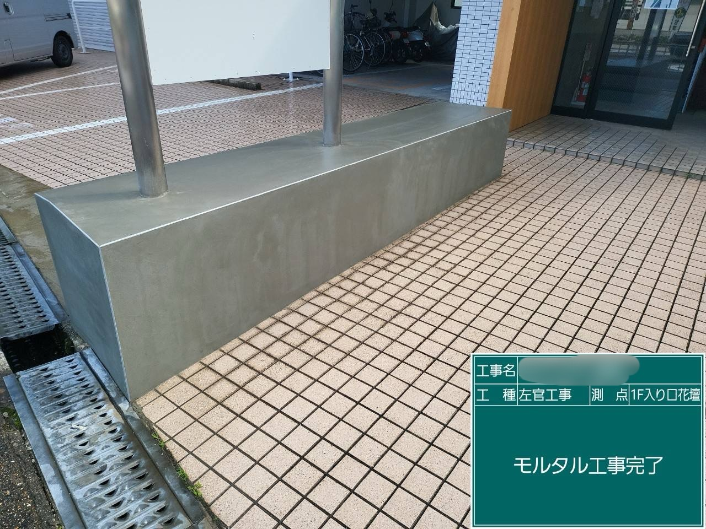

← トップページへ戻る


仮画像・AI生成イメージ（実際の施工実績ではありません）


施工実績WORKS
工事名を選ぶと、その工事の施工前・施工後の写真をご覧いただけます。
外壁修繕工事
施工前 · タップで拡大
施工後 · タップで拡大
写真をタップすると、拡大して比較できます。
防水工事
施工前 · タップで拡大
施工後 · タップで拡大
写真をタップすると、拡大して比較できます。
下地補修工事


タイル工事
施工前 · タップで拡大
施工後 · タップで拡大
写真をタップすると、拡大して比較できます。
左官工事


施工前 · タップで拡大


施工後 · タップで拡大
写真をタップすると、拡大して比較できます。